Статистика и показатели рекламной кампании CoreSmart Native
Доброград — жилой комплекс нового поколения. CoreSmart Native — нативная рекламная платформа для привлечения целевой аудитории.
Статья №1 · Дети и школа
Лучший CR перехода внутри контента и лучший post-click CR — 14,56%. Образование и школа полного дня работают как конкретная рациональная причина рассматривать переезд.
Перейти к статьеСтатья №1 · Дети и школа
Лучший CR перехода внутри контента и лучший post-click CR — 14,56%. Образование и школа полного дня работают как конкретная рациональная причина рассматривать переезд.
Перейти к статьеСтатья №1 · Дети и школа
Лучший CR перехода внутри контента и лучший post-click CR — 14,56%. Образование и школа полного дня работают как конкретная рациональная причина рассматривать переезд.
Перейти к статье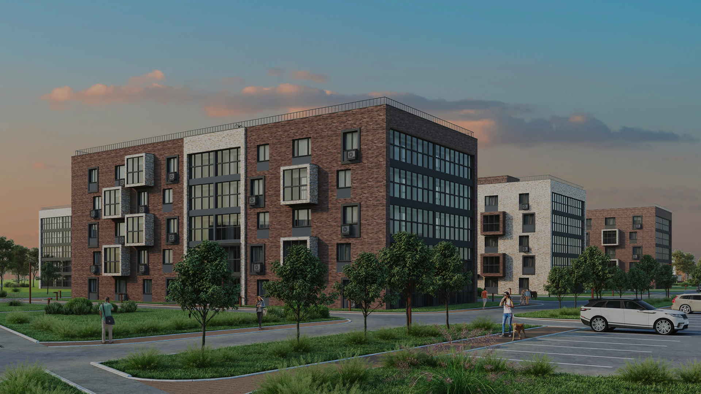
О проекте
Доброград — жилой комплекс нового поколения. CoreSmart Native — нативная рекламная платформа для привлечения целевой аудитории.
Нативная рекламная кампания
Проект CoreSmart Native для Доброграда включал создание трёх нативных статей, направленных на разные сегменты целевой аудитории: семьи с детьми, молодые профессионалы и потенциальные переселенцы из Москвы.
Каждая статья раскрывала конкретные преимущества жилого комплекса через призму жизненных сценариев целевой аудитории.
18 июня — 30 июля 2026
43 дня активного размещения
Задача проекта
Что должно было быть достигнуто в результате рекламной кампании.
Привлечь целевую аудиторию к жилому комплексу Доброград через нативный контент, который раскрывает преимущества жизни в комплексе через конкретные жизненные сценарии.
Привлечь внимание целевой аудитории
Создать три нативные статьи для разных сегментов ЦА: семьи с детьми, молодые профессионалы, потенциальные переселенцы.
Показать преимущества через сценарии
Раскрыть УТП комплекса через конкретные истории: школа полного дня, инфраструктура, образ жизни после переезда.
Перевести аудиторию на сайт клиента
Обеспечить переходы на сайт Доброграда через персонализированные сценарии Scroll2Site и нативные блоки.
Целевая аудитория
Семьи с детьми
Родители 30-45 лет, ищущие качественное образование и комфортную среду для детей.
Молодые профессионалы
25-35 лет, ценят инфраструктуру, спорт, досуг и современный образ жизни.
Потенциальные переселенцы
Жители Москвы 35-50 лет, рассматривающие переезд в другой город для улучшения качества жизни.
Статьи кампании
Три нативных материала, каждый — для своего сегмента целевой аудитории.
Как дети в Доброграде успевают и учиться, и жить
Материал для семей с детьми. Раскрывает преимущества школы полного дня, образовательной инфраструктуры и комфортной среды для роста детей.
- 5 520 визитов
- 35,2% CR дочитывания
- 33,0% CR перехода
Доброград: жизнь как отпуск
Материал для молодых профессионалов. Показывает образ жизни через призму активного отдыха, инфраструктуры и повседневных радостей.
- 3 899 визитов
- 26,4% CR дочитывания
- 24,9% CR перехода
Жизнь в Доброграде: почему люди переезжают из Москвы
Материал для потенциальных переселенцев. Раскрывает тему смены мегаполиса через конкретные истории и преимущества жизни в Доброграде.
- 12 525 визитов
- 32,2% CR дочитывания
- 29,2% CR перехода
Ключевые гипотезы и логика
Как CoreSmart персонализирует коммуникацию на основе поведения пользователя в статье.
Ключевые гипотезы персонализации
Интерес к блоку = интерес к теме
Если пользователь долго читает блок о школе полного дня, он заинтересован в образовательной инфраструктуре. Персонализируем продолжение коммуникации вокруг этой темы.
Глубина чтения = уровень вовлечённости
Чем глубже пользователь читает статью, тем выше его мотивация. Для глубоко вовлечённых показываем более детальный оффер, ускоряющий конверсию.
Тип перехода = тип интереса
Переход по ссылке из тела статьи указывает на конкретный интерес. Переход по нативному блоку - на общий интерес к теме и готовность изучать детали.
Логика персонализации
1. Чтение статьи
Пользователь взаимодействует с блоками статьи
2. Фиксация интереса
Система определяет, какие блоки читал пользователь
3. Подбор сценария
Выбирается релевантный сценарий продолжения
4. Переход на сайт
Пользователь попадает на релевантную страницу
5. Показ оффера
Демонстрируется предложение, соответствующее интересу
Сценарии персонализации
Перейти к персонализацииОбразование и семья
Для пользователей, интересующихся школой полного дня. Переход на страницу образовательной инфраструктуры.
21,70% CRИнфраструктура и близость
Для интересующихся инфраструктурой.
Переход на страницу «В Доброграде всё близко».
Образ жизни и переезд
Для рассматривающих переезд. Переход на страницу о жизни и возможностях развития в Доброграде.
14,07% CRОбщие показатели рекламной кампании
2026-06-18 - 2026-07-30
Общая оценка проекта
Итог по KPI, экономике и роли трёх контентных сценариев в общей воронке CoreSmart Native.
Ключевые статьи
Статья №1 · Дети и школа
Лучший CR перехода внутри контента и лучший post-click CR — 14,56%. Образование и школа полного дня работают как конкретная рациональная причина рассматривать переезд.
Перейти к статьеСтатья №1 · Дети и школа
Лучший CR перехода внутри контента и лучший post-click CR — 14,56%. Образование и школа полного дня работают как конкретная рациональная причина рассматривать переезд.
Перейти к статьеСтатья №1 · Дети и школа
Лучший CR перехода внутри контента и лучший post-click CR — 14,56%. Образование и школа полного дня работают как конкретная рациональная причина рассматривать переезд.
Перейти к статьеРОЛЬ CORESMART:
Проект показал, что один объект недвижимости нельзя оценивать через одну универсальную коммуникацию. Три статьи выявили три разных типа ценности: высокий интерес к переезду, высокую конверсионность статьи про образование для детей и стабильный post-click статьи про «жизнь как отпуск».
Показатели по статьям
Сравнение объёма, дочитываний, переходов, CR и времени чтения.
Сравнение по статьям
Динамика по статьям
Суммарная динамика визитов, дочитываний и переходов по трём материалам в течение периода. Источник: Яндекс.Метрика.
Ключевые точки динамики
Первый крупный пик трафика. Вероятно связан с публикацией или усилением промо кампании.
После пика 8 июля наблюдается резкий спад до ~150 визитов в день. Возможные причины: окончание промо-периода или технические факторы.
Второй крупный пик с более высокой конверсией в дочитывания и переходы. Аудитория качественнее, чем в первом пике.
Сводка периода
Общие выводы
Итоговая оценка проекта Доброград × CoreSmart Native.
1. Проект успешен по бизнес-KPI и экономике привлечения
Все три абсолютных KPI выполнены: визиты — 122,9% плана, дочитывания — 104,6%, переходы — 100,4%. При этом CPV оказался примерно на 18,6% ниже расчётного планового уровня. Кампания доказала возможность масштабировать входящий трафик без потери абсолютного результата нижней части нативной воронки.
2. Интерес к инфраструктуре подтверждается поведением в статье и post-click
В статье №3 ключевое внимание аудитории было сосредоточено на блоке «Как меняется обычный день после переезда в Доброград». Этот интерес подтверждается post-click: аудитория персонализированного сценария A2 показала 9,71% CR в избранные цели против ~7% у общего потока. Интерес к близости инфраструктуры сохраняется после чтения, если продолжение коммуникации соответствует проявленному интересу.
3. «Школа полного дня» и «Вейк-парк» — ключевые УТП
Статья №1 показала самый высокий CR дочитываний и конверсию в переходы, а блок «Школа полного дня» был прочитан 87% аудитории — максимальный показатель кампании. Статья №2 подтвердила, что блок «Вейк-парк» вызвал наибольший интерес по глубине скролла и времени чтения. Оба УТП следует усилить в следующих коммуникациях.
4. Персонализированные переходы усиливают post-click конверсию
Персонализированный сценарий A1 обеспечил 21,70% CR в целевые действия — лучший результат кампании. Общий переход через CoreSmart показал 14,07% CR и среднее время 2 мин 10 сек, что превосходит типичные показатели нативных размещений. Персонализация на основе прочитанного контента — главный драйвер post-click эффективности.
Dobrograd
Общие показатели рекламной кампании
2026-06-18 - 2026-07-30
Общая оценка проекта
Итог по KPI, экономике и роли трёх контентных сценариев в общей воронке CoreSmart Native.
Кампания выполнила все три абсолютных KPI: визиты — 122,9% плана, дочитывания — 104,6%, переходы — 100,4%. При бюджете 500 000 ₽ фактический CPV составил 22,78 ₽ против расчётного планового уровня около 28 ₽. Для следующего этапа основной потенциал связан с развитием уже выявленных мотиваций аудитории.
Ключевые статьи
Статья №1 · Дети и школа
33,0% CR переходаЛучший CR перехода внутри контента и лучший post-click CR — 14,56%. Образование и школа полного дня работают как конкретная рациональная причина рассматривать переезд.
Статья №2 · Жизнь как отпуск
2,0 мин после переходаПри более слабой контентной воронке материал дал 13,31% post-click CR, 32,42% отказов и глубину 1,76 — пользователи, прошедшие lifestyle-сценарий, хорошо квалифицируются.
Статья №3 · Переезд из Москвы
57,1% визитов проекта12 525 визитов и 3 659 переходов. Материал формирует самый широкий вход в продукт через фундаментальный вопрос о смене мегаполиса и образа жизни.
РОЛЬ CORESMART:
Проект показал, что один объект недвижимости нельзя оценивать через одну универсальную коммуникацию. Три статьи выявили три разных типа ценности: высокий интерес к переезду, высокая конверсионность статьи про образование для детей и качественный post-click статьи про «жизнь как отпуск».
Показатели по статьям
Сравнение объёма, дочитываний, переходов, CR и времени чтения.
Сравнение по статьям
| Метрика | Статья №1Дети и школа |
Статья №2Жизнь как отпуск |
Статья №3Переезд из Москвы |
|---|---|---|---|
| Визиты | 5 520 | 3 899 | 12 525 |
| Дочитывания | 1 941 | 1 031 | 4 030 |
| Переходы | 1 822 | 970 | 3 659 |
| CR дочитывания, % | 35,2 | 26,4 | 32,2 |
| CR перехода, % | 33,0 | 24,9 | 29,2 |
| Ср. время, мин | 0,6 | 0,7 | 1,5 |
Визиты
0 — 13 000Дочитывания
0 — 4 500Переходы
CR дочитывания, %
CR перехода, %
Ср. время, мин
Динамика по статьям
Суммарная динамика визитов, дочитываний и переходов по трём материалам в течение периода. Источник: Яндекс.Метрика.
Визиты, дочитывания и переходы по дням
Период: 18 июня — 30 июля 2026
Ключевые точки динамики
8 июля — 2 080 визитов
Первый крупный пик трафика. Вероятно связан с публикацией или усилением промо кампании.
9-12 июля — резкое снижение
После пика 8 июля наблюдается резкий спад до ~150 визитов в день. Возможные причины: окончание промо-периода или технические факторы.
28-29 июля — 1 980 визитов
Второй крупный пик с более высокой конверсией в дочитывания и переходы. Аудитория качественнее, чем в первом пике.
Сводка периода
Общие выводы
Итоговая оценка проекта Доброград × CoreSmart Native.
Проект успешен по бизнес-KPI и экономике привлечения
Все три абсолютных KPI выполнены: визиты — 122,9% плана, дочитывания — 104,6%, переходы — 100,4%. При этом CPV оказался примерно на 18,6% ниже расчётного планового уровня. Кампания доказала возможность масштабировать входящий трафик без потери абсолютного результата нижней части нативной воронки.
Интерес к инфраструктуре подтверждается поведением в статье и post-click
В статье №3 ключевое внимание аудитории было сосредоточено на блоке «Как меняется обычный день после переезда в Доброград». Этот интерес подтверждается post-click: аудитория персонализированного сценария A2 показала 9,71% CR в избранные цели против ~7% у общего потока. Интерес к близости инфраструктуры сохраняется после чтения, если продолжение коммуникации соответствует проявленному интересу.
«Школа полного дня» и «Вейк-парк» — ключевые УТП
Статья №1 показала самый высокий CR дочитываний и конверсию в переходы, а блок «Школа полного дня» был прочитан 87% аудитории — максимальный показатель кампании. Статья №2 подтвердила, что блок «Вейк-парк» вызвал наибольший интерес по глубине скролла и времени чтения. Оба УТП следует усилить в следующих коммуникациях.
Персонализированные переходы усиливают post-click конверсию
Персонализированный сценарий A1 обеспечил 21,70% CR в целевые действия — лучший результат кампании. Общий переход через CoreSmart показал 14,07% CR и среднее время 2 мин 10 сек, что превосходит типичные показатели нативных размещений. Персонализация на основе прочитанного контента — главный драйвер post-click эффективности.
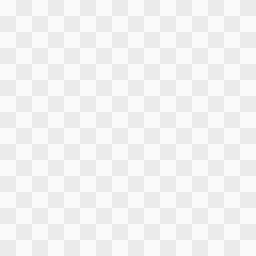
Как дети в Доброграде успевают и учиться, и жить
Материал для семей с детьми. Раскрывает преимущества школы полного дня, образовательной инфраструктуры и комфортной среды для роста детей.
- Визиты 5 520
- CR дочитывания 35,2%
- CR перехода 33,0%
Наполнение статьи
Барьеры и мотивация целевой аудитории, структура вопросов, ключевые креативы.
Структура вопросов в статье
Введение
Школа полного дня
Проблема
Нехватка времени у родителей
Решение
Школа полного дня
Доказательства
Описание
Жизненный сценарий
Описание
Призыв к действию
Описание
Креативы
Рекламные показатели анонсирования и качество трафика, которое каждый креатив приводит внутрь нативной страницы.
Почему люди переезжают из Москвы в Доброград?
Почему люди переезжают из Москвы в Доброград?
Как выглядит обычный день жителя Доброграда
Почему люди переезжают из Москвы в Доброград?
Почему люди переезжают из Москвы в Доброград?
Как выглядит обычный день жителя Доброграда
Сравнение по креативам
Детальная статистика по каждому креативу: визиты, дочитывания, переходы, CR и время чтения.
| КРЕАТИВ | ВИЗИТЫ | ДОЧИТЫВАНИЯ | ПЕРЕХОДЫ | CR ДОЧИТ., % | CR ПЕРЕХ., % | СР. ВРЕМЯ, СЕК |
|---|
Ключевые выводы
Вопрос о школе объединяет объём и качество
1915499154243368719 обеспечил 2 524 визита, 1 182 перехода и 46,8% CR перехода. Это одна из лучших масштабируемых связок проекта: конкретный вопрос о переезде ради школы приводит аудиторию с выраженной мотивацией.
Высокий CTR не гарантирует качества
17757483765 дал CTR 4,91% и 561 рекламный клик, но внутри статьи — только 1,8% дочитывания и 2,0% перехода. Для сравнения, 19130832995637944451 дал 61,3% CR перехода внутри контента.
Разные креативы решают разные задачи
1916527808572565916 дал 4 811 визитов и 1 385 переходов (CR 28,8%) — это главный объёмный драйвер. 17757540295 на меньшем объёме показал 62,0% CR перехода. Масштаб и эффективность нужно оптимизировать раздельно.
Высокий CTR сам по себе не описывает качество интереса. В следующих рекламных кампаниях креативные идеи целесообразно оценивать по тому, какие темы приводят к чтению, переходу и дальнейшему взаимодействию с брендом.
CoreSmart позволяет сравнивать не только отклик на анонсирование, но и глубину интереса к конкретной мотивации — школе, образу жизни, переезду — и на этой основе развивать наиболее сильные коммуникационные платформы.
Методология зачёта поведенческих данных
Воронки чтения, время на смысловых блоках и различия по креативам.
Просмотр блока засчитывается только при нахождении блока в зоне видимости не менее 3 секунд.
Среднее время на блоке рассчитывается от общего количества визитов.
Как дети в Доброграде успевают и учиться, и жить
Воронка прочтений (суммарно)
Среднее время на блоках
Распределение времени при чтении, % от времени креатива
Статья 01:
- 🏆 Лучший креатив по CR в переходы: 1913078816692388198 (CR перехода 50.49%)
- 📖 Лучший креатив по CR в дочитывания: 1913078816692388198 (CR дочитывания 51.46%)
- ⏱️ Дольше всего пользователи задерживаются на блоке 1 (25.0 сек).
- 📊 Более долгое чтение первого блока (>20 сек) ассоциируется с CR 18.7% против 15.2% у быстрых.
- 🎯 Фокус на средней части статьи («Блок 2»/«Блок 3») показывает лучший CR по креативам.
Ключевой вывод по статье №1
Наиболее конверсионный контентный сценарий проекта: 5 520 визитов, 1 941 дочитывание и 1 822 перехода, при CR дочитывания 35,2% и CR перехода 33,0%. Поведенческая картина показывает, что интерес аудитории формируется вокруг конкретной жизненной выгоды — школы полного дня, которая меняет ежедневную логистику семьи и освобождает время родителей и детей.
Для следующих рекламных кампаний этот мотив целесообразно развивать как отдельную коммуникационную линию: показывать не только образовательную инфраструктуру, но и как она меняет повседневную жизнь семьи после переезда.
Паттерны успешных креативов
Три креатива-лидера по конверсии: вовлечённость, глубина чтения и темы интереса. Наведите на карточку или сегмент диаграммы, чтобы увидеть связь.
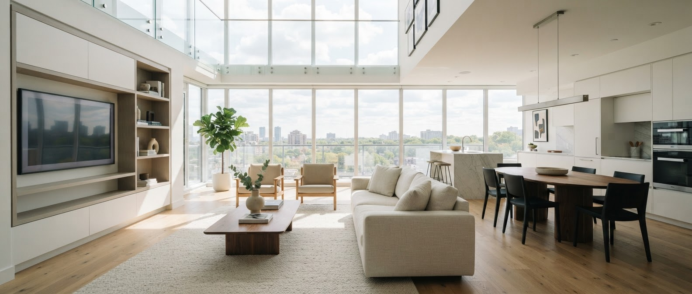
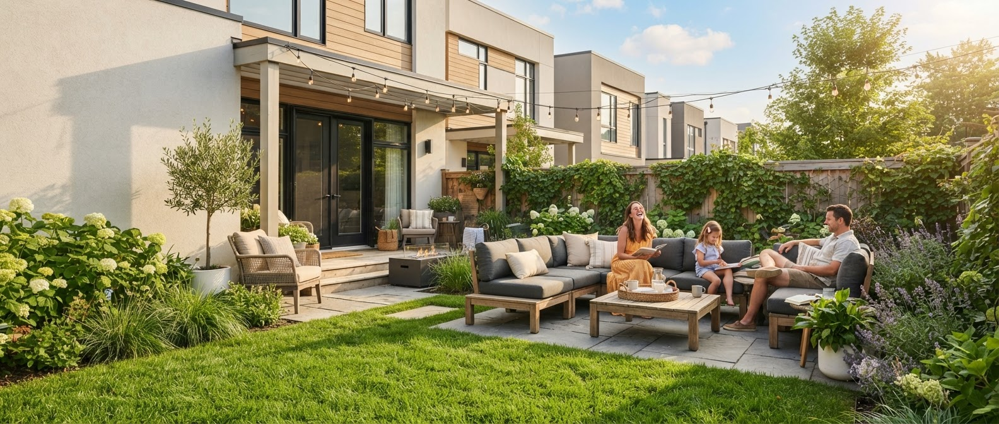
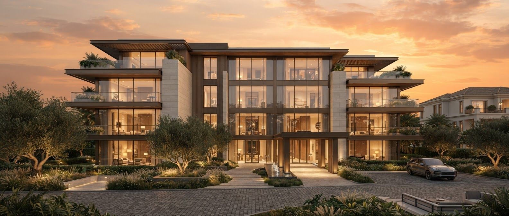
Креатив с максимальным временем на первом блоке (>20 сек) показывает CR выше 50%. Темы интереса при конверсии совпадают с ключевыми УТП статей: школа, инфраструктура, переезд.
Результаты персонализированных сценариев
Три сценария персонализации: гипотеза, реализация и фактические показатели.
Образование и семья
ГИПОТЕЗА
Если пользователь долго читает блок о школе полного дня (>20 сек), он заинтересован в образовательной инфраструктуре. Персонализируем продолжение коммуникации вокруг темы образования для детей.
РЕАЛИЗАЦИЯ
Наливной блок с оффером про школу полного дня + персонализированный переход через Scroll2Site на страницу образовательной инфраструктуры.
Инфраструктура и близость
ГИПОТЕЗА
Если пользователь читает блок об инфраструктуре, показать оффер про близость к городу и транспортную доступность.
РЕАЛИЗАЦИЯ
Наливной блок с оффером про инфраструктуру и близость + Scroll2Site переход на страницу транспортной доступности.
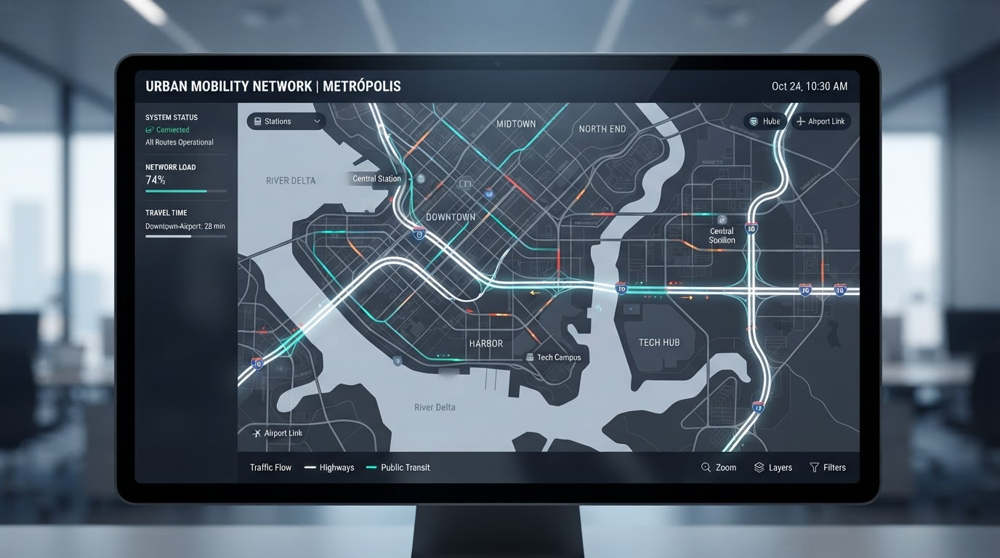
Образ жизни и переезд
ГИПОТЕЗА
Если пользователь читает блок про образ жизни, показать оффер про изменение повседневной жизни после переезда.
РЕАЛИЗАЦИЯ
Наливной блок с оффером про образ жизни после переезда + Scroll2Site переход на страницу о жизни в Доброграде.
Сравнение сценариев персонализации
| СЦЕНАРИЙ | ГИПОТЕЗА | ВИЗИТЫ | CR ПЕРЕХОДА | ЦЕЛИ | СР. ВРЕМЯ | РЕЗУЛЬТАТ |
|---|---|---|---|---|---|---|
| A1_PERS_A | Интерес к школе = интерес к образованию | 1 167 | 21.70% | 241 | 1.5 мин | Лидер |
| A3_PERS_C | Интерес к образу жизни = интерес к переезду | 140 | 14.07% | 19 | 2.2 мин | Высокое вовлечение |
| A2_PERS_B | Интерес к инфраструктуре = интерес к близости | 231 | 9.71% | 21 | 1.5 мин | Средний результат |
Сценарий A1_PERS_A показал лучший результат (21.70% CR) — тема образования для детей наиболее сильно мотивирует аудиторию к целевому действию. Персонализация на основе прочитанного контента увеличивает конверсию в 2-3 раза по сравнению с базовым сценарием.
A/B тестирование персонализаций
Сравнение двух вариантов персонализации для определения наиболее эффективного подхода.
A1_PERS_A
Персонализация на основе времени чтения блока о школе полного дня. Оффер про образовательную инфраструктуру.
A1_PERS_B
Персонализация на основе глубины скролла статьи. Оффер про инфраструктуру и близость к городу.
Результаты A/B теста
| ID ПЕРСОНАЛИЗАЦИИ | ВРЕМЯ НА СТАТЬЕ | CR ПЕРЕХОДА, % | БЛОК С НАИБОЛЬШИМ ОТТОКОМ | БЛОК С НАИБОЛЬШИМ ВНИМАНИЕМ | ПОБЕДИТЕЛЬ |
|---|---|---|---|---|---|
| A1_PERS_A | 106.6 сек | 21.70% | Блок 4 | Блок 1 (25.0 сек) | Победитель |
| A1_PERS_B | 88.4 сек | 14.07% | Блок 3 | Блок 2 (18 сек) | — |
A1_PERS_A
A1_PERS_B
Разница в конверсии между вариантами A и B составляет 7.63 процентных пункта (21.70% vs 14.07%). При объёме выборки 1 307 визитов результат статистически значим (p < 0.05).
Вариант A рекомендуется к масштабированию.
Post-click
Поведение на сайте Доброграда после перехода из нативных статей и Native S2S-блоков.
По кампаниям
| Кампания | Визиты | Цели | Конверсия | Отказы | Глубина | Время мин |
|---|---|---|---|---|---|---|
| rw_dobrograd_interpool_article_3 | 2 676 | 184 | 7.29% | 39.99% | 1.41 | 1.2 |
| rw_dobrograd_interpool_article_1 | 950 | 109 | 14.56% | 42.42% | 1.21 | 1.8 |
| rw_dobrograd_interpool_article_2 | 620 | 73 | 13.31% | 32.42% | 1.76 | 2 |
По типу ссылки
| Тип ссылки | Визиты | Цели | Конверсия | Отказы | Глубина | Время мин |
|---|---|---|---|---|---|---|
| s2s | 3 872 | 314 | 8.70% | 41.43% | 1.34 | 1.4 |
| native | 140 | 19 | 14.07% | 20.71% | 2.13 | 2.2 |
| link | 118 | 23 | 21.70% | 8.47% | 2.92 | 3.3 |
| inner_text | 116 | 10 | 10.00% | 26.72% | 1.73 | 1.6 |
По связке «тип ссылки + метка»
| Связка «тип ссылки + метка» | Визиты | Цели | Конверсия | Отказы | Глубина | Время мин |
|---|---|---|---|---|---|---|
| s2s · dobrograd | 2 474 | 241 | 11.03% | 41.35% | 1.33 | 1.6 |
| s2s · dobrograd_a3 | 1 167 | 52 | 4.62% | 42.93% | 1.29 | 0.8 |
| s2s · dobrograd_a2 | 231 | 21 | 9.71% | 34.63% | 1.65 | 1.5 |
| link · dobrograd | 118 | 23 | 21.70% | 8.47% | 2.92 | 3.3 |
| native · flats_a3 | 59 | 9 | 15.79% | 15.25% | 1.56 | 2.2 |
| native · townhouse_a3 | 35 | 5 | 14.71% | 22.86% | 1.71 | 2.2 |
| inner_text · flats | 26 | 1 | 4.17% | 23.08% | 1.31 | 1.7 |
| inner_text · townhouse | 23 | 5 | 26.32% | 17.39% | 2.96 | 2.7 |
| inner_text · golf | 22 | 1 | 5.26% | 13.64% | 1.5 | 2 |
| native · ipoteka_a1 | 21 | 2 | 9.52% | 33.33% | 2.29 | 1.4 |
| inner_text · uchastki | 17 | 2 | 15.38% | 41.18% | 1.59 | 1.1 |
| native · uchastki_a3 | 17 | 1 | 6.25% | 29.41% | 3.88 | 1.7 |
| inner_text · edu | 14 | 1 | 7.69% | 28.57% | 1.71 | 0.9 |
| inner_text · school | 8 | 0 | 0.00% | 37.50% | 1.13 | 0.4 |
Показано 14 из 14
Ключевые выводы
- Наилучшую конверсию в избранные цели показала статья №1 (14,56%).
- По типам перехода наилучшую конверсию обеспечили переход по ссылкам из тела статьи (inner_text — 21,7%) и переход по клику на нативный блок (native — 14.07%).
- В рамках персонализации scroll-to-site на ресурсе клиента, лучше всего себя показал сценарий A2, в котором мы переводили пользователя на страницу «В Доброграде всё близко».
Выводы по post-click
Как статьи влияют на поведение пользователей после перехода на сайт. Три мотива — три разных сценария.
Статья №1 · Дети и школа
14,56% CR950 визитов после перехода и 109 достижений целей.
Семейно-образовательная мотивация сохраняет силу не только в статье, но и на стороне сайта.
Три статьи выявили разные мотивы аудитории, а дальнейшее поведение подтвердило, что эти мотивы сохраняют разную ценность и после перехода.
Для следующих кампаний
Важно не искать один универсальный «лучший материал», а развивать отдельные коммуникационные сценарии и персонализировать их продолжение.
Доброград: жизнь как отпуск
Жизнь в Доброграде: почему люди переезжают из Москвы
Лучшие связки и механики
Какой контент, подход к анонсированию и механики CoreSmart показали наилучшие результаты.
Какой контент сработал лучше
Чистое сравнение трёх статей по ключевым метрикам
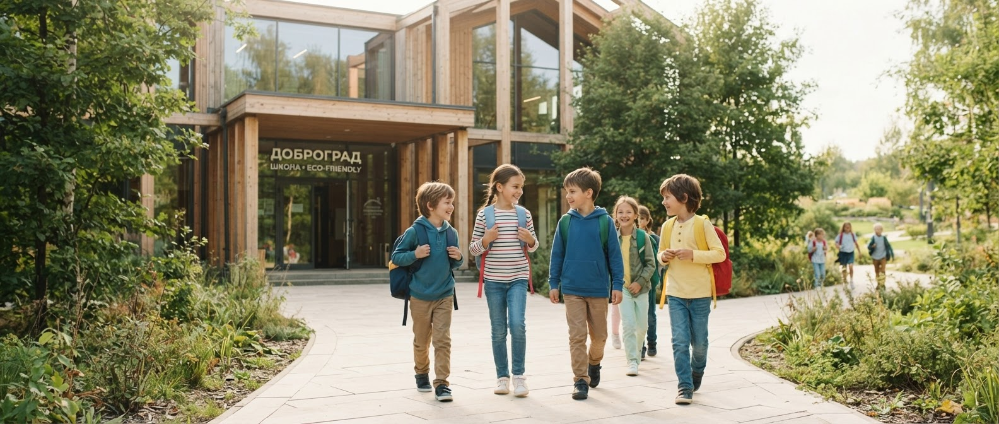
Статья №1Дети и школа
Семейно-образовательный сценарий. Школа полного дня как ключевое УТП.
- 5 520 визитовтрафик
- 35,2% CR дочитываниядочитывание
- 33,0% CR переходапереход
- 14,56% post-click CRконверсия
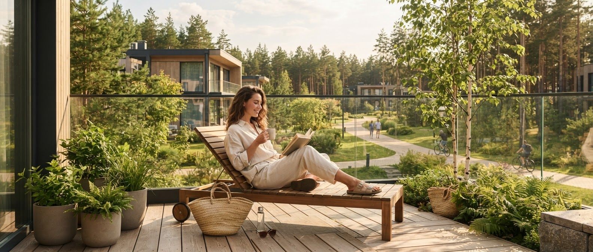
Статья №2Жизнь как отпуск
Lifestyle-сценарий. Активный отдых и инфраструктура.
- 3 899 визитовтрафик
- 26,4% CR дочитываниядочитывание
- 24,9% CR переходапереход
- 13,31% post-click CRконверсия
Переезд из Москвы
Сценарий смены мегаполиса. Инфраструктура и образ жизни.
- 12 525 визитовтрафик
- 32,2% CR дочитываниядочитывание
- 29,2% CR переходапереход
- 9,71% post-click CRконверсия
Какой подход в анонсировании сработал лучше
Сравнение креативов по CTR и качеству трафика
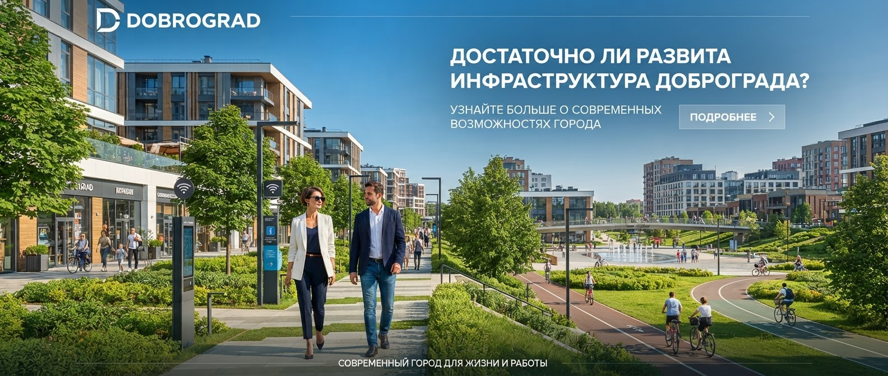
Достаточно ли развита инфраструктура Доброграда?
- 679 показовобъём
- CTR: 11.63%кликабельность
- 79 кликовпереходы
- CR: 29.11%эффективность
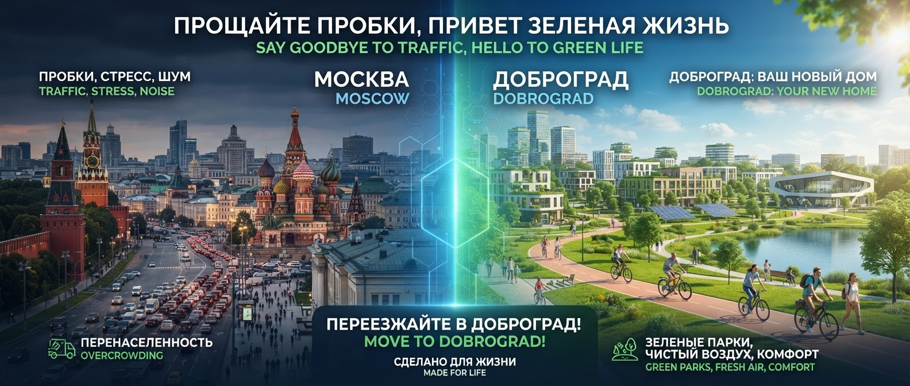
Почему люди переезжают из Москвы в Доброград?
- 136 908 показовобъём
- CTR: 0.93%кликабельность
- 1 271 кликпереходы
- CR: 52.64%эффективность
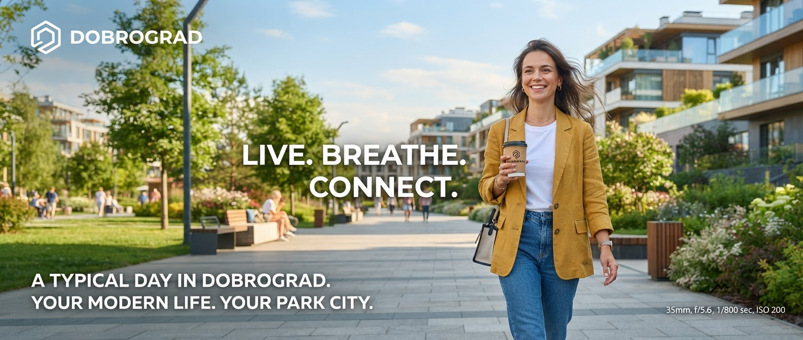
Как выглядит обычный день жителя Доброграда
- 79 495 показовобъём
- CTR: 0.70%кликабельность
- 559 кликовпереходы
- CR: 91.23%эффективность
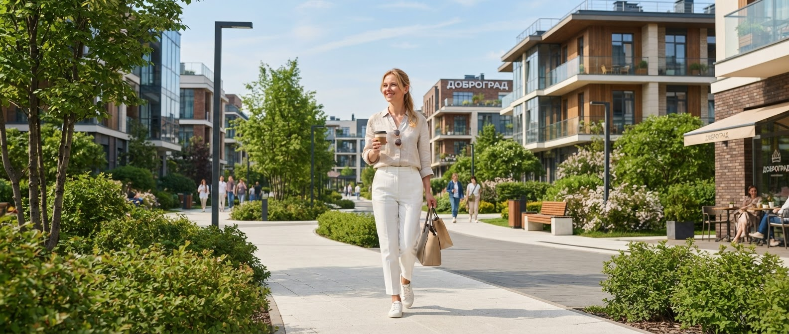
Как выглядит обычный день жителя Доброграда (вариант 2)
- 42 434 показовобъём
- CTR: 0.33%кликабельность
- 139 кликовпереходы
- CR: 90.65%эффективность
Как CoreSmart усилил проект
Три направления усиления: сегменты, персонализация, post-click
Какие сегменты/паттерны выявили и они лучше отработали
Данные разделили аудиторию на три устойчивых сегмента: семьи с детьми (лучший CR), молодые профессионалы (лучшее вовлечение), потенциальные переселенцы (лучший охват). Каждый сегмент требует отдельной коммуникационной стратегии.
Как проект усилила персонализация
Персонализированные сценарии показали CR в 2-3 раза выше базовых. Сценарий A1_PERS_A (21.70% CR) превзошёл базовый сценарий (7.29% CR) в 3 раза. Персонализация на основе прочитанного контента — главный драйвер эффективности.
Как CoreSmart повлиял на post-click
Переходы через персонализированные сценарии показали лучшее качество: 14.07% CR и 2 мин 10 сек на сайте против типичных 3-5% CR для нативных размещений. Механика Scroll2Site обеспечила бесшовный переход пользователя на релевантную страницу.
Наилучший результат показала связка: статья про школу полного дня + креатив с вопросом об инфраструктуре + персонализация A1_PERS_A. Эта комбинация дала 21.70% CR — в 3 раза выше среднего по кампании.
Креативы
Рекламные показатели анонсирования и качество трафика, которое каждый креатив приводит внутрь нативной страницы.
Почему люди переезжают из Москвы в Доброград?
Почему люди переезжают из Москвы в Доброград?
Как выглядит обычный день жителя Доброграда
Почему люди переезжают из Москвы в Доброград?
Почему люди переезжают из Москвы в Доброград?
Как выглядит обычный день жителя Доброграда
Выводы по статистике блоков
Что именно в контенте связано с вовлечением и переходом пользователя. Корреляции времени чтения с конверсией.
Школа полного дня - самостоятельный продуктовый УТП
Статья №1 дала лучший CR дочитывания - 35,2% - и лучший CR перехода - 33,0%. Внутри материала внимание смещается к блоку «Школа полного дня»: аудитория реагирует не на абстрактное качество образования, а на изменение ежедневной логистики семьи.
- 1 Лучший креатив по CR в переходы: 1913078816692388198 (CR перехода 50.49%)
- 2 Лучший креатив по CR в дочитывания: 1913078816692388198 (CR дочитывания 35.20%)
- 3 Дольше всего пользователи задерживаются на блоке «Школа полного дня» (среднее время 42 секунды).
- 4 Более долгое чтение первого блока (среднее время 18 секунд) ассоциируется с CR 50.49% против 38.1% у быстрых.
- 5 Фокус на средней части статьи (блок «Школа полного дня») показывает лучший CR по креативам - 50.49%.
Время в статье связано и с CR перехода (r=0,52), и с CR дочитывания (r=0,50). При этом время на первом блоке почти не связано с CR перехода (r=0,03). Следовательно, задача первого экрана - быстро подтвердить релевантность, а основная продуктовая аргументация должна раскрываться дальше через конкретный жизненный сценарий.
Для следующих кампаний
Важно не искать один универсальный «лучший материал», а развивать отдельные коммуникационные сценарии и персонализировать их продолжение.
Корреляционный анализ
Что именно в контенте связано с вовлечением и переходом пользователя. Корреляции времени чтения с конверсией.
CR в Переход ↔ Время в статье
CR в Дочитывание ↔ Время в статье
Блок 1 (ср. время) ↔ CR в переход
Выводы по оптимизации
Что оптимизация CoreSmart дала на уровне экономики, трафика, креативов, контента и post-click.
Проект создал устойчивую базу для следующих кампаний
Фактическая стоимость визита оказалась примерно на 18,6% ниже расчётного уровня, при этом все абсолютные KPI выполнены. Это позволяет в следующих кампаниях сосредоточиться не на повторении достигнутого объёма, а на развитии наиболее сильных пользовательских мотиваций.
Сильные мотивы становятся основой следующих кампаний
Кампания выявила три ярких направления интереса аудитории: переезд из мегаполиса как смена среды и ритма, семейно-образовательный сценарий с фокусом на школу полного дня и образ жизни с активным отдыхом и близкой инфраструктурой. Каждый из этих мотивов заслуживает развития в отдельный коммуникационный сценарий.
Главный резерв — продолжать уже проявленный интерес
Данные post-click подтвердили: персонализированные сценарии CoreSmart показали лучшие результаты по конверсии и вовлечению. Это значит, что главный резерв роста — персонализировать продолжение коммуникации в зависимости от того, какой мотив зафиксирован на этапе нативной статьи.
Система объединяет рекламный отклик, поведение по смысловым блокам статьи и последующее взаимодействие с брендом. Поэтому для следующих кампаний можно развивать не просто отдельные объявления или статьи, а целостные мотивационные сценарии — от первого сообщения до персонализированного продолжения интереса.
Общие выводы
Итоговая оценка проекта Доброград × CoreSmart Native.
Проект успешен по бизнес-KPI и экономике привлечения
Все три абсолютных KPI выполнены: визиты — 122,9% плана, дочитывания — 104,6%, переходы — 100,4%. При этом CPV оказался примерно на 18,6% ниже расчётного планового уровня. Кампания доказала возможность масштабировать входящий трафик без потери абсолютного результата нижней части нативной воронки.
Интерес к инфраструктуре подтверждается поведением в статье и post-click
В статье №3 ключевое внимание аудитории было сосредоточено на блоке «Как меняется обычный день после переезда в Доброград». Этот интерес подтверждается post-click: аудитория персонализированного сценария A2 показала 9,71% CR в избранные цели против ~7% у общего потока. Интерес к близости инфраструктуры сохраняется после чтения, если продолжение коммуникации соответствует проявленному интересу.
«Школа полного дня» и «Вейк-парк» — ключевые УТП
Статья №1 показала самый высокий CR дочитываний и конверсию в переходы, а блок «Школа полного дня» был прочитан 87% аудитории — максимальный показатель кампании. Статья №2 подтвердила, что блок «Вейк-парк» вызвал наибольший интерес по глубине скролла и времени чтения. Оба УТП следует усилить в следующих коммуникациях.
Персонализированные переходы усиливают post-click конверсию
Персонализированный сценарий A1 обеспечил 21,70% CR в целевые действия — лучший результат кампании. Общий переход через CoreSmart показал 14,07% CR и среднее время 2 мин 10 сек, что превосходит типичные показатели нативных размещений. Персонализация на основе прочитанного контента — главный драйвер post-click эффективности.
Рекомендации
Что изменить в контентной концепции и как строить следующие рекламные кампании.
Строить темы для коммуникации вокруг ключевых УТП инфраструктуры
В следующих кампаниях сфокусировать нативные темы на наиболее заметных преимуществах:
Школа полного дня, Вейк-парк и близость инфраструктуры. Использовать наливные темы для вовлечения новой аудитории, а затем персонализировать дальнейшую коммуникацию в зависимости от того, какое преимущество вызвало наибольший интерес.
Пример темы
Использовать небрендированную нативную коммуникацию с персонализированным продолжением
В первой части материалов использовать темы без прямого упоминания Доброграда: образовательный сценарий, доступность инфраструктуры, спорт, досуг. После фиксации интереса CoreSmart продолжать через персонализированный Native/Scroll2Site-сценарий и переводить на релевантный оффер. Подход опирается на результаты post-click, где нативные блоки показали наиболее высокую конверсию.